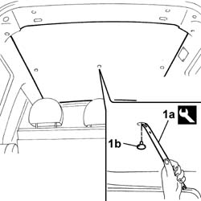
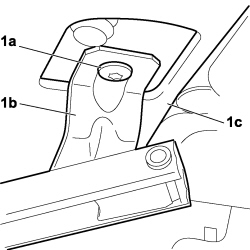
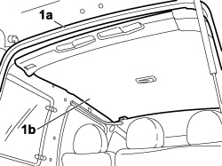

7040H12 Roof panel REAR TRIM - R.R.
- Path
- Procedures > 70 FITTINGS > 7040 BODYSHELL INTERIOR TRIMS AND FITTINGS > 7040H roof panel lining > 7040H12 Roof panel REAR TRIM - R.R.
- Kind
- repair procedure (removal / refitting; the operation number is the code)
- Applies to
- all engines; all production periods
- Interactive page
- https://sloeber94.github.io/elrnDB-fDbl/en/#/2585146
Applies to: engines: 1.2 8v, 1.6 16v, 1.3 JTD 16V, 1.9 JTD 8V, 1.9 DIESEL; all production periods; only with equipment: Doblò trim level
 Removing
Removing
 Refitting
RefittingOp. 7020C40 SLIDING SIDE DOOR UPPER GUIDE TRIM (ONE) LEFT OR RIGHT - R.R.
1. Use the tool (1a) to remove the fixing buttons (1b).
 | Name | Country |
|---|---|---|
1a | Scraper blade | 1.878.077.000 |

Applies to: engines: 1.2 8v, 1.6 16v, 1.3 JTD 16V, 1.9 JTD 8V, 1.9 DIESEL; all production periods; only with equipment: Doblò trim level
Remove the roof panel.
Applies to: engines: 1.2 8v, 1.6 16v, 1.3 JTD 16V, 1.9 JTD 8V, 1.9 DIESEL; all production periods; only with equipment: Doblò trim level
Refitting
RemovingCheck that the roof panel is not damaged.
Check that the plastic fixing buttons are not damaged.
Position the roof panel and secure it using the buttons.
Op. 7020C40 SLIDING SIDE DOOR UPPER GUIDE TRIM (ONE) LEFT OR RIGHT - R.R.
Applies to: engines: 1.4 8v, 1.6 16v, 1.3 JTD 16V, 1.9 JTD 8V; production: da 12/03; only with equipment: MY 2005
Removing
RefittingOp. 7040E12 CENTRE COURTESY LIGHT - R+R
Op. 7040H50 REAR PANEL (ONE), LEFT OR RIGHT - R.R
Op. 7020C40 SLIDING SIDE DOOR UPPER GUIDE TRIM (ONE) LEFT OR RIGHT - R.R.

Applies to: engines: 1.4 8v, 1.6 16v, 1.3 JTD 16V, 1.9 JTD 8V; production: da 12/03; only with equipment: MY 2005

Applies to: engines: 1.4 8v, 1.6 16v, 1.3 JTD 16V, 1.9 JTD 8V; production: da 12/03; only with equipment: MY 2005
Refitting
RemovingOp. 7020C40 SLIDING SIDE DOOR UPPER GUIDE TRIM (ONE) LEFT OR RIGHT - R.R.